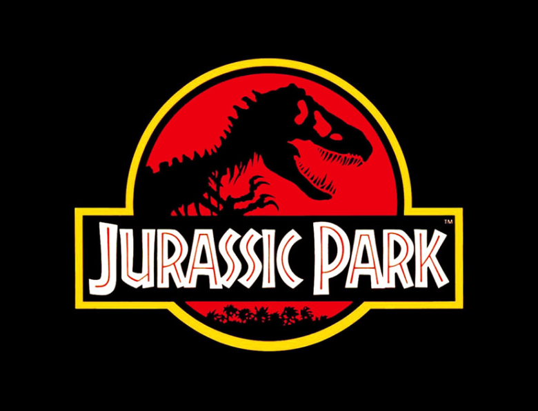

🎅
¡Bienvenido a Jurassic Reyes Park - Edición Reyes Magos!
¡Sumérgete en una aventura prehistórica única donde los dinosaurios celebran la Navidad!
¿Cómo Jugar?
¡Descubre al dinosaurio escondido detrás de las cajas de regalo! Tienes tres cajas para elegir.
Haz clic en una para ver si has encontrado al dinosaurio.
- Haz clic en una de las tres cajas de regalo.
- Si encuentras al dinosaurio, sumarás 1 punto.
- Después de cada intento, las cajas se reordenarán al azar.
- ¡Intenta encontrar al dinosaurio 10 veces!
¡Jugar Ahora!